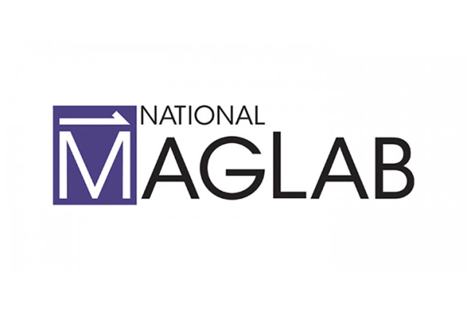

High-security maintenance tracking system developed for the National High Magnetic Field Laboratory (MagLab), managing safety clearances and maintenance schedules for high-energy magnetic systems.
This FileMaker Pro database system was designed to track safety clearances, maintenance schedules, and equipment status for critical high-energy systems at a national laboratory facility. The system received outstanding reviews from the National Science Foundation during facility audits.
The system significantly improved safety compliance and maintenance scheduling at the facility, contributing to the lab's outstanding NSF review. It streamlined operations while maintaining the highest safety standards required for high-energy magnetic field research.